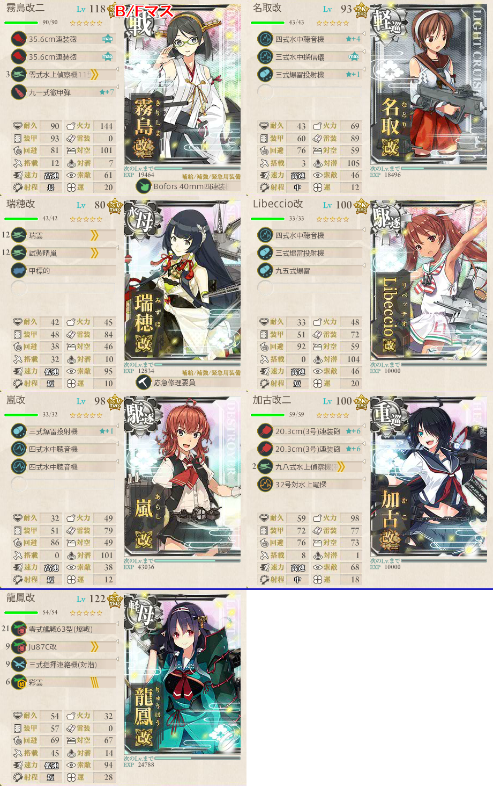
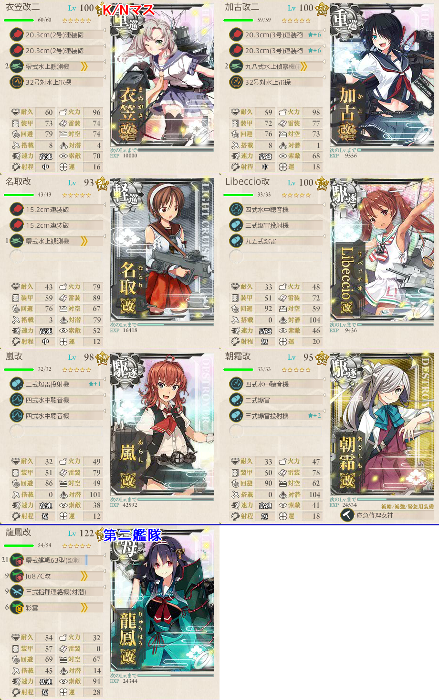
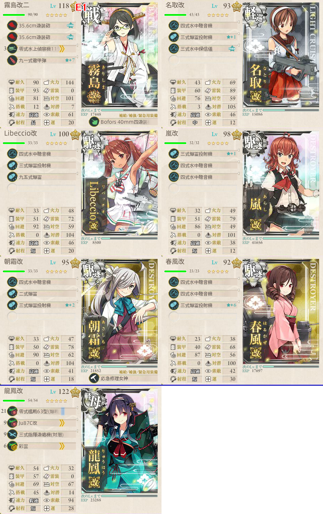

【艦これ】捷号決戦！邀撃、レイテ沖海戦(後篇) E1 パラワン水道/作戦海域
2018年冬イベント E1（甲作戦）
ギミック
- B/N/K/FマスでA勝利以上
- 最低でも2回出撃する必要がある
- ABEF
- DGKN
構成
- 第三艦隊で出撃可能のため、7隻編成できる
B/Fマス
- ABEF
- 戦艦1 軽巡1 水母1 駆逐2 自由枠2
- 要索敵
- 対潜艦は3隻もいれば十分（Bマスでも潜水艦は3隻）
- したがって、自由枠には水上戦闘可能かつ索敵補助が可能な艦を

霧島 名取 瑞穂 Libeccio 嵐 加古 龍鳳
A/Bは単横陣、Fは複縦陣を選択すればOK
K/Nマス
水母0 戦艦0
軽巡1 駆逐3 自由枠3
要索敵
K/Nマスともに水上戦闘
潜水艦と戦うのはGマスのみのため、先制爆雷は控えめでOK
- どうせボス戦で使うので、B/Fで利用した先制爆雷可能艦を採用しても良い
対空は不要のため、防空駆逐艦は温存する

衣笠 加古 名取 Libeccio 嵐 朝霜 龍鳳
Gマスのみとは言え、甲では対潜事故が起きる
- そのため、駆逐艦には対潜に専念してもらう
その他は対水上戦闘用の装備で固める
- 画像では龍鳳が対潜重視だが、これも対水上戦闘用に流星改を積む等しておいたほうが良さそう
基地航空隊はNマスに集中する
ボスマス
DEHIO
戦艦1以下 水母0
要索敵
ボス旗艦は潜水艦のため、先制対潜を優先する
ボス前にツ級がいるため、水上戦闘もできるようにしておきたい
編成の縛りは緩いが、お札をあまり増やさないためにギミック時の艦を使うことを意識して編成

- 霧島 名取 Libeccio 嵐 朝霜 春風 龍鳳
基地航空隊
- 利用可能なので、ボス前に投げておくか
- FとNも水上戦闘のため、その攻略の際には投げておいても良さそう
- Nマスは半径5以上必要
出撃ログ（甲）
B/Fマス
| 回数 | 編成 | 33式 | ルート | 戦果 |
|---|---|---|---|---|
| 1 | 霧島 名取 瑞穂 Libeccio 嵐 加古 龍鳳 | 42.43 | ABEF | B/F S勝利 |
K/Nマス
| 回数 | 編成 | 33式 | ルート | 戦果 |
|---|---|---|---|---|
| 1 | 衣笠 加古 名取 Libeccio 嵐 朝霜 龍鳳 | 39.66 | DGKN | K/N S勝利 |
ボスマス
| 回数 | 編成 | 33式 | ルート | 戦果 |
|---|---|---|---|---|
| 1 | 霧島 名取 Libeccio 嵐 朝霜 春風 龍鳳 | 15.99 | DEHIO | S勝利（大淀） |
| 2 | 霧島 名取 Libeccio 嵐 朝霜 春風 龍鳳 | 15.99 | DEHIO | S勝利（瑞鳳） |
| 3 | 霧島 名取 Libeccio 嵐 朝霜 春風 龍鳳 | 15.99 | DEHIO | S勝利（択捉） |
| 4 | 霧島 名取 Libeccio 嵐 朝霜 春風 龍鳳 | 15.99 | DEHIO | S勝利（能代） |
| 5 | 霧島 名取 Libeccio 嵐 朝霜 春風 龍鳳 | 15.99 | DEHIO | S勝利（瑞鳳） |
| 6 | 霧島 名取 Libeccio 嵐 朝霜 春風 龍鳳 | 15.99 | DEHIO | S勝利（瑞鳳） ゲージ破壊 |
敵編成
| マス | 敵航空戦力 | 敵潜水艦 | 備考 |
|---|---|---|---|
| A | なし | あり | 潜水艦のみ |
| B | なし | あり | 潜水艦のみ |
| F | なし | あり | 軽巡1 駆逐4 潜水1 |
| G | なし | あり | 潜水艦のみ |
| H | なし | あり | 潜水艦のみ |
| I | なし | あり | ツ級1 駆逐3 潜水2 |
| K | なし | なし | 駆逐5 |
| N | なし | なし | 駆逐古姫1 駆逐4 輸送1 旗艦が先制魚雷を放ってくる |
| O | なし | あり | ボス 潜水新姫1 潜水2～3 駆逐2 |